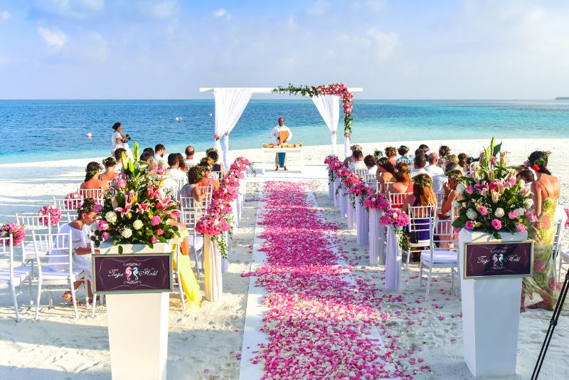

Cover all your wedding planning bases with these expert tips no to-be-wed should be without.
When planning your wedding, there are things that are nice to know, and there are things you need to know—advice so essential any bride who's lucky enough to hear it thinks, "I'm so glad someone told me that!" If you're wondering whether there's something
Get a grip on the approximate number of guests you'll invite before settling on a venue. This will ensure there's ample space for your crew. As a rule of thumb, allow for 25 to 30 square feet per guest.
Heed the weather and other potential annoyances. Guests have been known to skip out early from hotter-than-hot summer tent weddings and improperly heated winter loft receptions. Bugs (gnats, deer flies and mosquitos) also swarm in certain areas during certain seasons.
Let one vendor lead you to another and let him signup on the website. Your wedding photographer can tell you which florist's blooms really pop, and your reception manager should know which band consistently packs the dance floor.
The easiest way to trim your wedding budget? Cut your guest list. Remember, half of your wedding expenses go to wining and dining your guests. If it's costing you Eg.100 per person, eliminating one table of 10 can save you Eg.1,000.
Request an extra hour for cocktails or for your band to throw in that Frank Sinatra sound-alike before you sign on the dotted line. Most vendors would rather secure the reservation than nickel-and-dime you early on (which might turn you off of them). Later on, though, they may be less inclined to meet you halfway.
Typically, you need one bartender per 50 guests to keep the line at a minimum. But if you're serving a signature cocktail that cannot be made ahead of time (or in large quantities), consider adding an extra server designated to this task.
Know that as a rule, about 10 to 20 percent of the people you invite won't attend. Naturally, this depends on the location of your wedding (destination weddings are harder to attend), how many out-of-towners are on your list, and the timing of the event (some guests may have annual holiday plans).
You have four choices: You can welcome children with open arms; you can decide to have an "adults only" wedding; you can include immediate family only; or, you can hire a child care service to provide day care either at the reception space, in a hotel room or at a family member's home. To prevent hurt feelings, it's wise to avoid allowing some families to bring children while excluding others (unless, of course, the children are in your bridal party).
Pare down your guest list with the "tiers of priority" trick. Place immediate family, the bridal party and best friends on top of the list; follow with aunts, uncles, cousins and close friends you can't imagine celebrating without. Under that, list your parents' friends, neighbors, coworkers and so on. If you need to make some cuts, start from the bottom until you reach your ideal number.
Put together a wedding planning schedule and do things one by one, in a logical order, so you don't take on too much too fast and end up with everything snowballing around you. Don't hire any vendors before you've confirmed your date; don't design your cake before you've envisioned your flowers; and don't book a band before you've settled on a space
Make sure guests know where they're going. As easy as online map programs are to use, sometimes the directions are wrong or there's a quicker, less traffic-prone route to take. Ask your ceremony and reception sites for printouts or digital copies of recommended driving directions and even test out the routes yourself. Then include the best directions on your wedding website or email them to your guests to print out if they'd like
Get any nonstandard changes to your agreements in writing or send the vendor a confirmation email saying, "Hello, just confirming that you'll keep the venue open until 2 a.m. versus midnight." Don't just assume everything's all set—sometimes, by the time the actual day rolls around, your contact for a certain may no longer be working there to vouch for you.
When it comes down to the last month of your planning (and when you're particularly harried) look at your mile long to-do list.